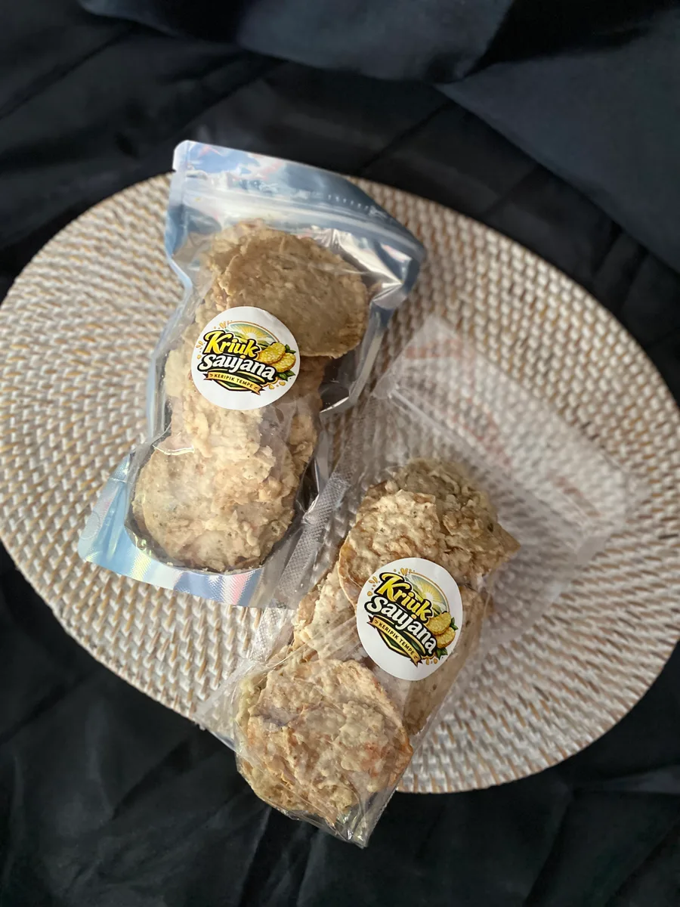

Mengangkat Potensi Kuliner & Komoditas Nusantara
Platform katalog ini merupakan inisiatif kolaborasi produk wirausaha (Produk Kreatif & Kewirausahaan / PKK) yang menyatukan 3 brand autentik: Kriuk Saujana, Serabona, dan Coffee Digital ke dalam satu etalase digital yang profesional, transparan, dan mudah diakses.
Setiap produk dikembangkan melalui riset mendalam (Business Model Canvas) untuk memastikan keunggulan nilai rasa, higienitas bahan baku, kemasan modern berstandar pangan, serta kemudahan komunikasi pemesanan langsung melalui Contact Person (CP) yang berdedikasi.

Nilai Utama yang Kami Pegang
Komitmen kami dalam menghadirkan produk kuliner dan komoditas terbaik untuk Anda.
Bahan Baku Berkualitas
Dari kedelai lokal Malang, daging sapi & ayam segar pilihan, hingga biji kopi petik merah lereng Semeru — kami hanya menggunakan bahan baku murni tanpa campuran sintetis.
Proteksi Rasa & Kerenyahan
Standing pouch zipper lock kedap udara, toples jar botol PET dengan segel pengaman ganda, serta pouch foil dengan one-way degassing valve menjamin produk tahan lama secara alami.
Contact Person Siaga
Pemesanan Anda ditangani langsung oleh PIC masing-masing unit: Talita (Kriuk Saujana), Artha (Serabona), dan Jessika (Coffee Digital) dengan format pesan siap kirim.
3 Brand dalam Katalog Kami

Kriuk Saujana - "Renyahnya Gak Dibuat-Buat!"
Kriuk Saujana mengangkat kekayaan olahan tempe Malang menjadi camilan kekinian berstandar tinggi. Irisan tipis yang renyah berpadu gurihnya bumbu ketumbar dan bawang putih tanpa rasa serak di tenggorokan. Tersedia dalam ukuran praktis 100g (Rp10.000) dan kemasan hemat 200g (Rp20.000).
Penanggung Jawab: Talita • WhatsApp: +62 815-5338-8310 • IG: @kriuksaujana__
Buka Produk Kriuk Saujana →
Serabona - "Cita Rasa Nusantara, Serat Khas Abon!"
Serabona adalah olahan abon premium berbahan dasar daging asli (dada ayam segar dan daging sapi pilihan) dengan serat nyata yang dipadu taburan kacang sangrai renyah gurih. Praktis untuk sahur, berbuka, bekal anak, maupun oleh-oleh khas toples jar kedap udara (Rp17.000 - Rp24.000).
Penanggung Jawab: Artha • WhatsApp: +62 813-3363-3565 • IG: @bon_boniga
Buka Produk Serabona →
Coffee Digital - "Kopi Murni Nusantara dalam Genggaman Digital"
Coffee Digital menghadirkan kopi murni 100% dari perkebunan lereng Semeru Dampit Malang Selatan dengan karakter cokelat karamel yang tebal dan aroma semerbak. Tersedia varian Grade Robusta (Rp26.000), Premium Petik Merah (Rp37.000), dan Premium House Blend Mix (Rp42.000) kemasan degassing valve pouch.
Penanggung Jawab: Jessika • WhatsApp: +62 881-0266-96817 • IG: @coffeedigitall_
Buka Produk Coffee Digital →